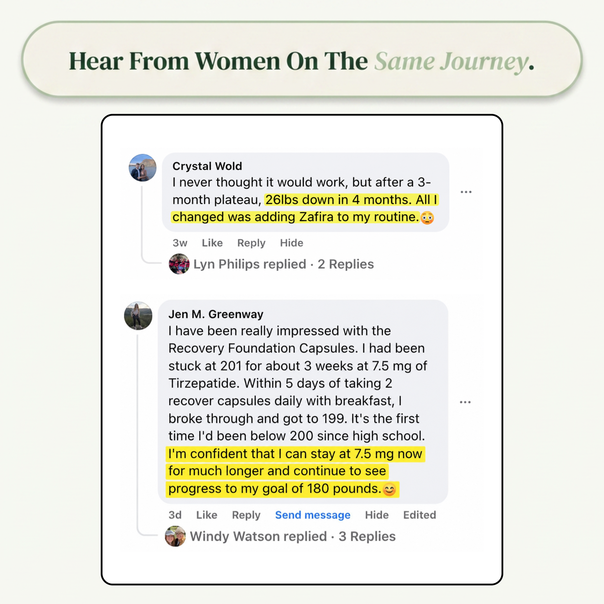

What GLP-1 Users Say on Trustpilot
Excellent
{{ r.name }}{{ r.meta }}
{{ r.text }}
{{ r.exp }}
Trustpilot review
What GLP-1 Users Are Saying About Zafira
★★★★★4.9/5 - 12,847+ Reviews
Every review below is from a verified buyer, shown word for word. The 4-star ones too.
Loved By Thousands Finding Their Way Back
“{{ v.a }}{{ v.b }}{{ v.c }}”
✓ Verified CustomerWhy GLP-1 Users Trust Zafira Recovery
